Orchestra Sections
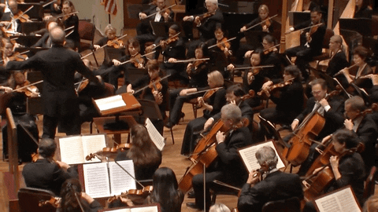The orchestra sections are the divisions of large instruments used in an orchestra.
The orchestra is a large group of musicians playing different kinds of instruments together.
Every instrument used in an orchestra is grouped into sections. Each section comprises instruments that produce sound the same way or through the same means.
All instruments in the orchestra are grouped into five different sections. Typically, the sections are organized according to their most common characteristic.
The five orchestra sections are listed below.
String section
Woodwind section
Brass section
Percussion section
Keyboard section
The modern symphony orchestra contains string, woodwind, brass, and percussion instruments. But the keyboard instrument is added to the orchestra occasionally as needed.
We will discuss each of these sections in more detail in the following sections.
String Sections of the Orchestra
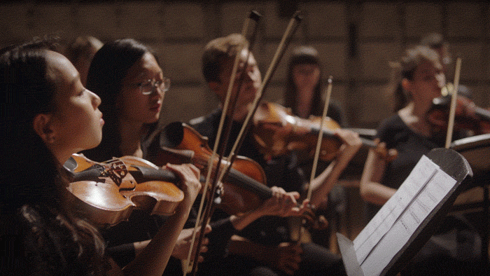
The string section is comprised of the instrument that uses vibrating strings to produce sound.
Instruments in the string sections are sounded by the vibration of strings. By striking, plucking, or bowing the strings, vibration and sound were produced.
The string section is the fundamental of the orchestra. It has the largest number of instruments in the orchestra.
Of course, orchestral works tend to depend more on the string section than any other section.
They are a very powerful section of the orchestra. This is due to the wide range of expressions the string instruments provide.
This section has been a consistent part of the orchestra through different eras of music.
The string instruments make sound when their strings are artistically bowed or plucked.
String vibration is typically caused by bowing or plucking the string.
The strings vibrate over the bridge, which is connected to the hollow wooden body.
The bridge transfers the vibration from the string to the hollow wooden body of the instrument.
The hollow wooden body then increases the volume of the tone produced by the vibrating string.
The hollow wooden body also resonates and projects sound out of the “f” holes on the wooden body.
The string section can be found in the front section of the orchestra along both the left and right sides.
The instruments in the orchestra’s string section are:
Violin
Viola
Cello
Double bass
Harp
Piano
The piano is also considered part of the string section of the orchestra. But the piano is not the most prominent member of the string section.
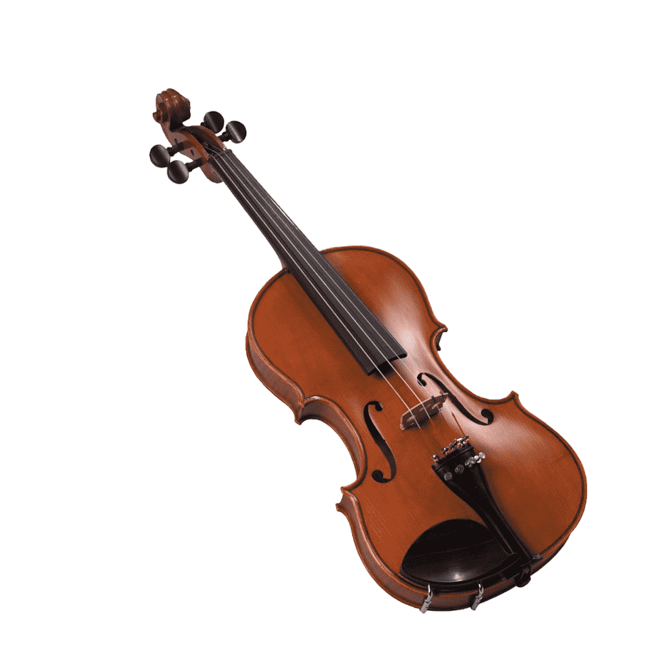
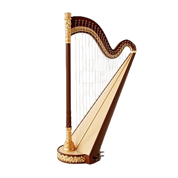
Woodwind Sections of the Orchestra

The woodwind section comprises hollow tube instruments made of wood or metal.
This wind section is customarily known as woodwind. The reason for this is that the majority of the wind instruments in there were originally made of wood.
But that has changed, and most woodwind instruments are currently made of metal.
The instrument in this section produces sound by causing the air column inside a long tube to vibrate.
This happened when air was blown through a reed or an opened mouthpiece.
Most of these woodwind instruments are reed instruments. But the piccolo and standard concert flute are not reed-blown instruments.
The woodwind instruments produce sound when air is blown across the open hole, single reed, or double reed.
The air agitated the air inside the long, hollow tube.
These instruments produce different notes when the player closes or opens the tone holes. The tone holes are generally drilled along their length in a specific pattern.
Woodwind instruments can be found in the middle section of the orchestra, behind the string section.
The instruments in the woodwind orchestra section are:
Piccolo
Flute
Oboe
Clarinet
Bassoon
Double Bassoons
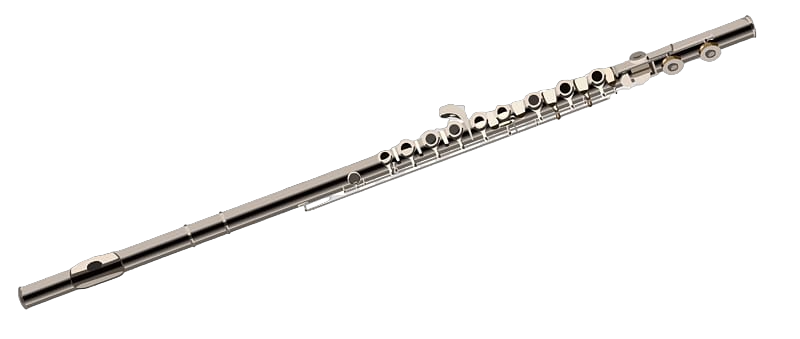
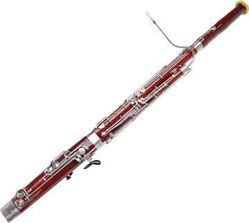
Brass Sections of the Orchestra

The instrument in this section is made of brass and uses a valve or slide to create sounds of different pitches.
This wind section of the orchestra is traditionally known as the “brass section.”
The name comes from the metallic material they are made from. Most of the instruments in the brass section are made of an alloy of copper and zinc called brass.
Brass instruments are all made of brass and forged into a distinctive shape. Specifically, they are typically made with a flared bell end and cup-shaped mouthpiece.
The brass section is the loudest section of the orchestra.
Brass instruments produce sound when the player vibrates his or her lips against the cupped mouthpiece.
This in turn sets the air column within the tube of the instrument into vibration, and a sound is produced.
The brass instrument can be either valved or slide-operated.
The slide on brass instruments adjusts the length of the instrument tubing.
Valved brass instruments change the length of the tubing of the instrument with a set of valves.
Both the slide and valve mechanisms help the instrument produce sounds with different pitches.
Specifically, woodwind instruments can be found in the middle section of the orchestra, behind the string section.
The instruments in the brass orchestra section are:
Horn (French horn)
Trumpet
Trombone
Tuba
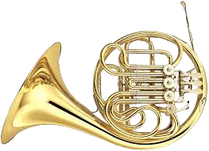
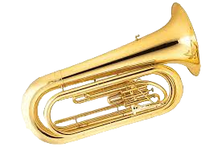
Percussion Sections of the Orchestra
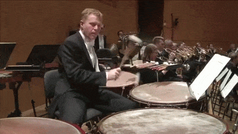
The instruments in this section comprise instruments that produce sound by vibrating bodies.
The vibration is typically caused by striking, scraping, or shaking the instrument.
Tapping, or stroking, is also used to make sound with the percussion instruments.
Indeed, the variety of percussion instruments in the orchestra is massive. The percussion instruments can be membranophones, idiophones, aerophones, or chordophones.
The instruments in the orchestra’s percussion section are:
Anvil
Piano
Chimes
Rattles
Timpani
Triangle
Cymbals
Marimba
Xylophone
Bass drum
Snare drum
Vibraphones
Glockenspiel
Tubular Bells
Tambourines
The percussion instruments produce sound when the player strikes them with the hand, mallets, or beaters.
The percussion instrument can also produce sound by shaking or scraping.
The major reason the piano appears on the list is due to its means of producing sound.
The piano is known to produce sound when its specially designed hammer hits a string. This is percussion by nature.
Percussion instruments are classified into two groups, which are:
Pitched (tuned) percussion
unpitched (untuned) percussion
Pitch Percussions
Basically, pitch percussion instruments are instruments that can create sounds of different pitches. The instruments in this group can play specific pitches, like string, woodwind, and brass instruments. Some of the instruments in the pitched percussion group are listed below.Timpani
Xylophone
Vibraphone
Glockenspiel
Tubular Bells
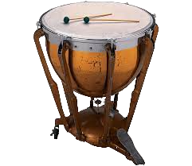 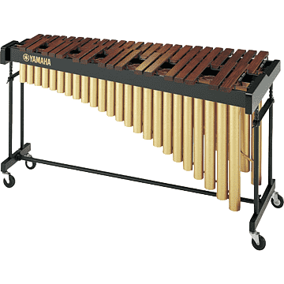
Unpitched Percussions
The sound of the unpitched percussion instrument is distinct. Some of the instruments in the unpitched percussion group are listed below.Gong
Anvil
Rattle
Cymbals
Triangle
Castanets
Tambourine
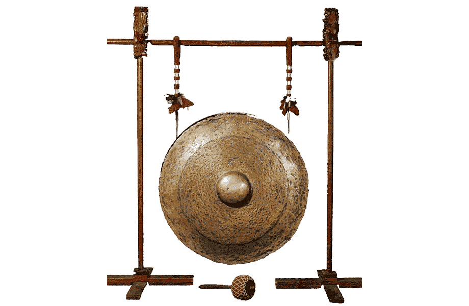
Of course, most of the percussion instruments are less frequently used in orchestral compositions. Percussion instruments can be found at the back of the orchestra, behind the brass section.